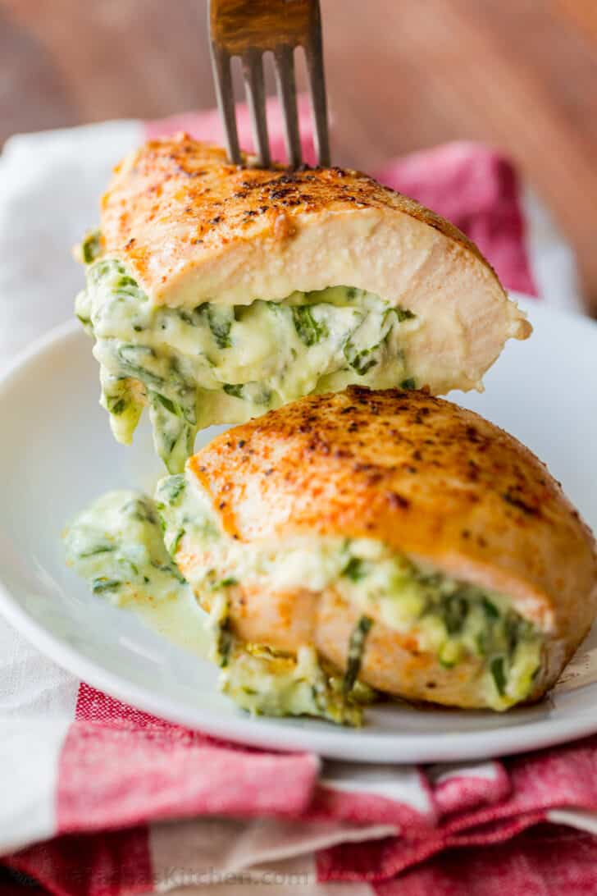

Stuffed Chicken Breast Recipe Instructions

Stuffed Chicken Breast
Creamy and cheesy spinach stuffed chicken is so juicy and tasty!
Ingredients
- 3 large, boneless, skinless chicken breasts totaling about 1 3/4 to 2 lbs
- Salt, black pepper, garlic powder, and paprika to season the outside of the chicken
- 4 oz of cold block-style cream cheese
- Mayonnaise
- Fresh garlic cloves to the filling is a must. We use a garlic press for this
- Freshly chopped spinach works great
- Mozzarella and parmesan adds the perfect balance of saltiness and melty cheesiness.
Directions
- Make filling – use a fork to mash together cream cheese, mayo, minced garlic, and salt. Mash in chopped spinach, shredded mozzarella, and parmesan.
- Cut slits in chicken - lay chicken breast flat and use a sharp knife to cut a slit about 3/4 of the way into the chicken
- Stuff chicken - fill each chicken breast with 1/3 of the mixture then seal edges with toothpicks
- Sear Chicken - heat a large 10″ oven-safe pan over medium heat. Add 1 1/2 Tbsp olive oil and saute chicken 4 minutes per side until browned.
- Bake - transfer your hot skillet to the preheated oven at 425˚F for about 10-15 minutes (depending on chicken thickness), or until a thermometer inserted in the deepest part of your chicken registers 165˚F.